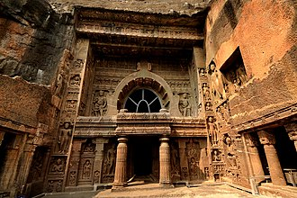
Ajanta Caves
Famous UNESCO site with ancient Buddhist paintings.
📍 100 km from city
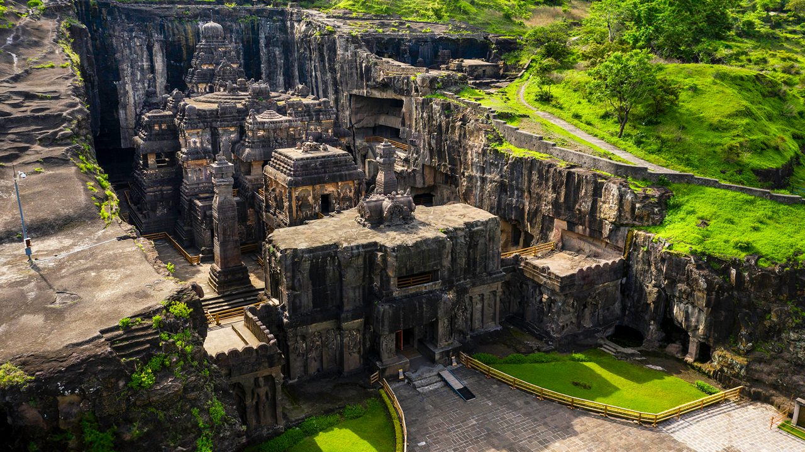
Ellora Caves
Rock-cut temples of 3 religions.
📍 30 km
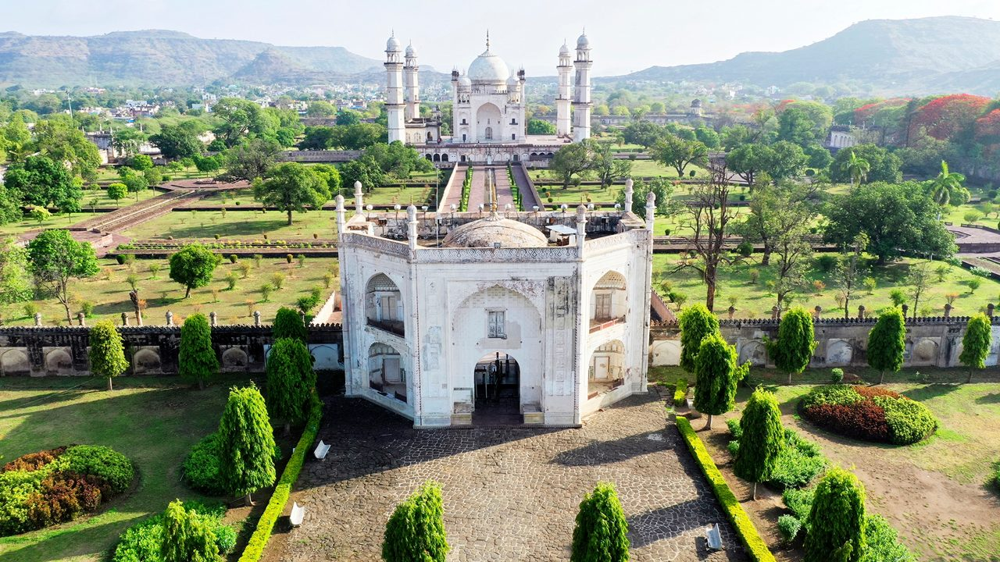
Bibi Ka Maqbara
Taj of Deccan monument.
📍 City

Devgiri Fort
One of the strongest forts in India.
📍 15 km
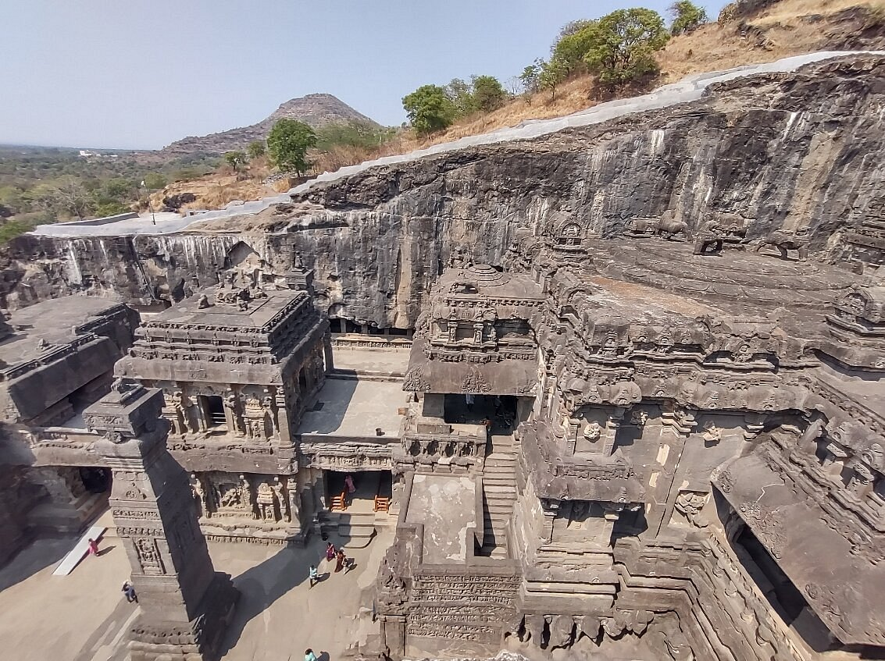
Aurangabad Caves
Ancient Buddhist rock-cut caves known for carvings and sculptures.
📍 Near Bibi Ka Maqbara
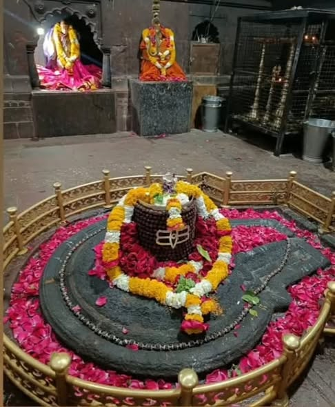
Grishneshwar Temple
One of the 12 Jyotirlingas of Lord Shiva, known for its spiritual importance.
📍 Near Ellora (30 km)
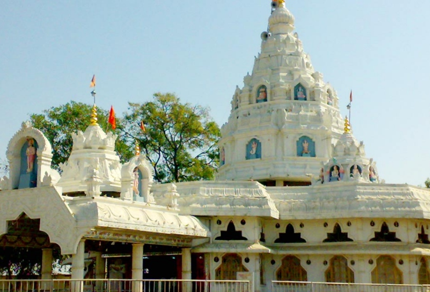
Bhadra Maruti
Located in Khuldabad, this temple is dedicated to Lord Hanuman in a rare sleeping (reclining) posture. It is one of the only temples in India where Hanuman is seen resting. The temple attracts thousands of devotees every year.
📍 Location: Khuldabad (25 km)
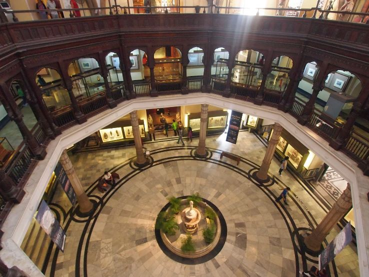
Chhatrapati Shivaji Maharaj Museum
This museum showcases the history, weapons, artifacts, and paintings related to Chhatrapati Shivaji Maharaj and the Maratha Empire. It is a must-visit place to understand the rich heritage and bravery of Marathas.
📍 Location: City area
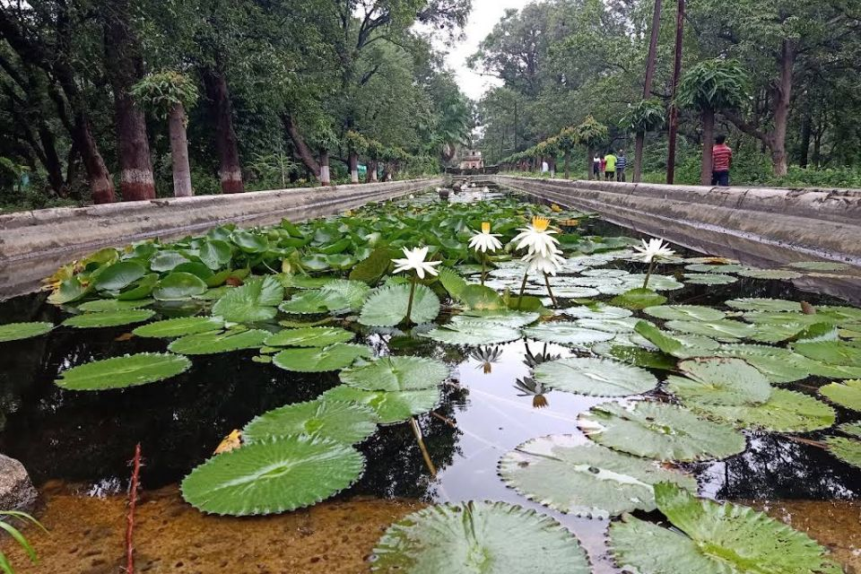
Himayat Baugh
A historic Mughal garden known for its greenery and peaceful environment. It also houses an agricultural research center and is ideal for nature lovers and morning walks.
📍 Location: City
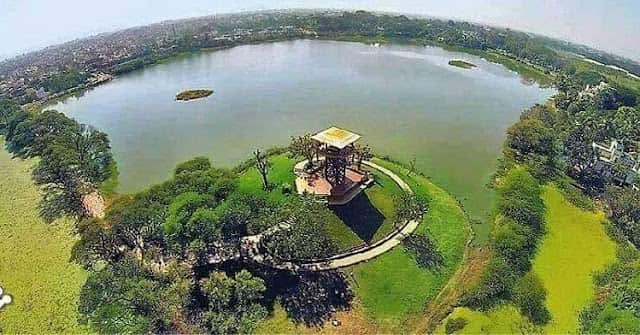
Salim Ali Lake
A beautiful lake and bird sanctuary named after famous ornithologist Salim Ali. It is a perfect place for bird watching, relaxation, and enjoying nature.
📍 Location: Near Delhi Gate
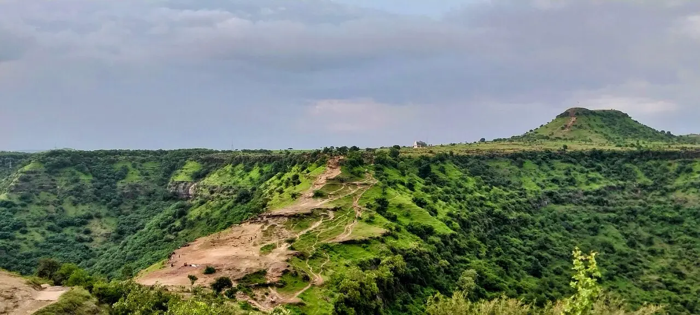
Goga Baba Hill
A popular spiritual and scenic spot offering panoramic views of the city. It is known for its peaceful atmosphere and is visited by locals for trekking and relaxation.
📍 Location: Near city outskirts
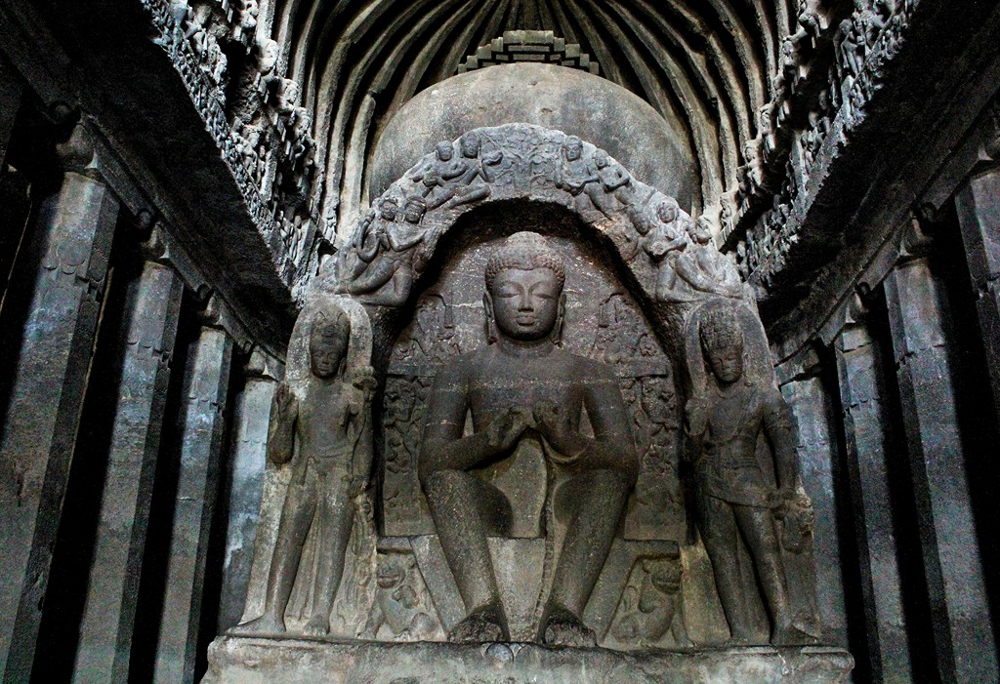
Buddha Leni
Ancient Buddhist caves carved into hills, dating back to the 6th century. These caves feature beautiful carvings, sculptures, and offer a glimpse into ancient Buddhist culture.
📍 Location: Near Bibi Ka Maqbara
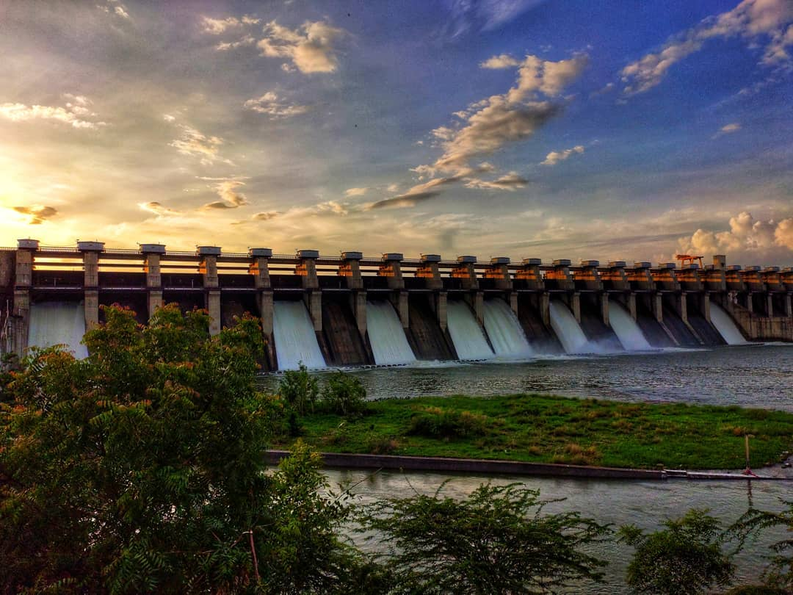
Jayakwadi Dam
One of the largest earthen dams in Maharashtra built on the Godavari River. It also supports a bird sanctuary and offers scenic sunset views.
📍 Location: Paithan (50 km)
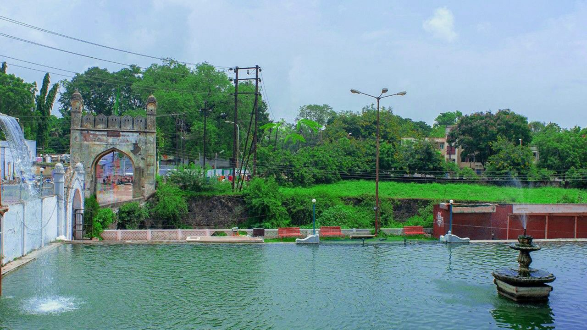
Panchakki
An ancient water mill built during the Mughal period. It uses an underground water channel system to generate energy, showcasing brilliant engineering of that time.
📍 Location: City
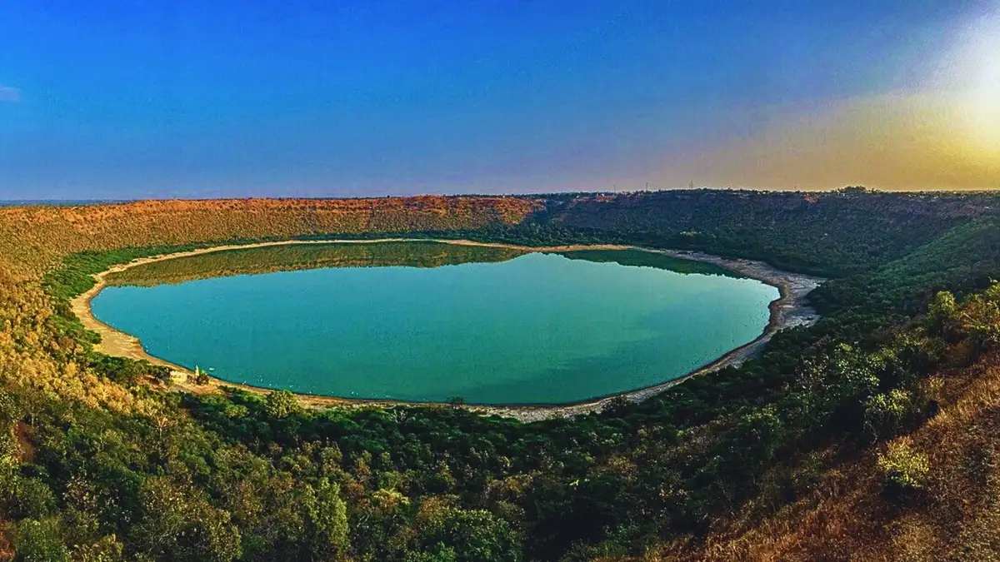
Lonar Lake
Lonar Lake is a unique crater lake formed by a meteor impact thousands of years ago. It is known for its rare ecosystem, saline water, and scientific importance.
📍 Lonar (140 km)

Mhaismal
A beautiful hill station known for cool climate, foggy weather, and scenic valleys. It is a perfect getaway during monsoon and summer.
📍 Location: 40 km from city
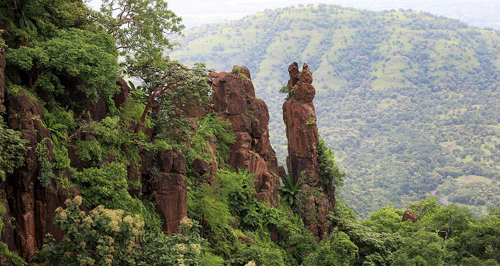
Gautala Wildlife Sancturay
📍 Location: Near Kannad (65 km)
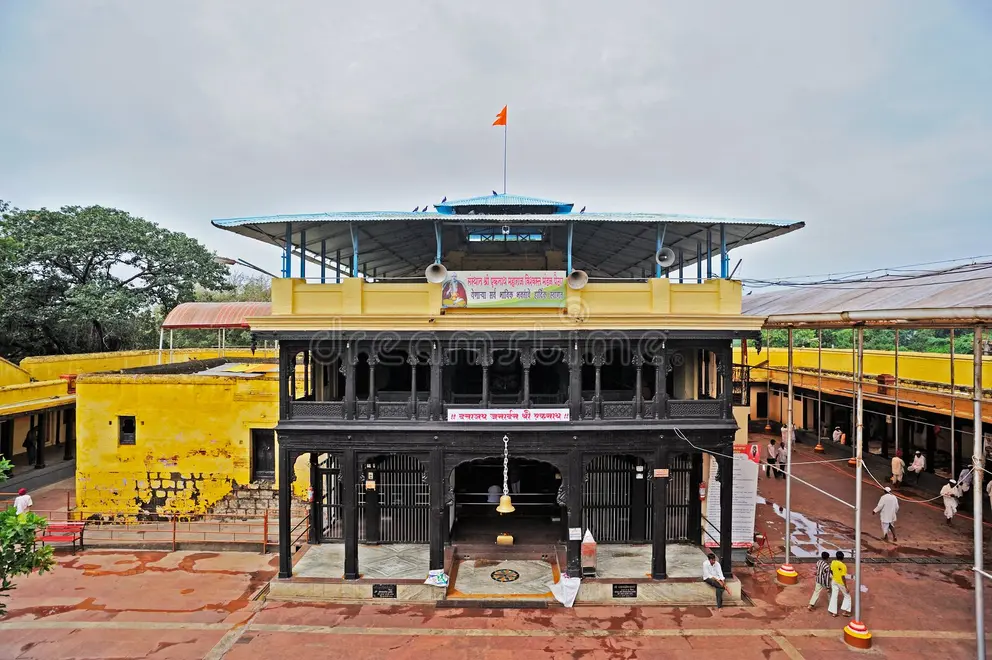
Sant Eknath Samadhi Mandir
Samadhi Mandir of Sant Eknath, a revered saint of Maharashtra, known for his teachings and devotion. The place is peaceful and holds great spiritual importance.
📍 Paithan (50 km)

Siddharth Garden
Popular garden and zoo known for greenery, animals, and family-friendly atmosphere. It is a great place for relaxation and recreation.
📍 City

Datta Mandir
Famous temple associated with Sant Dnyaneshwar, where the sacred text Dnyaneshwari was written. It holds great spiritual and historical importance.
📍 Newasa (near Sambhajinagar)